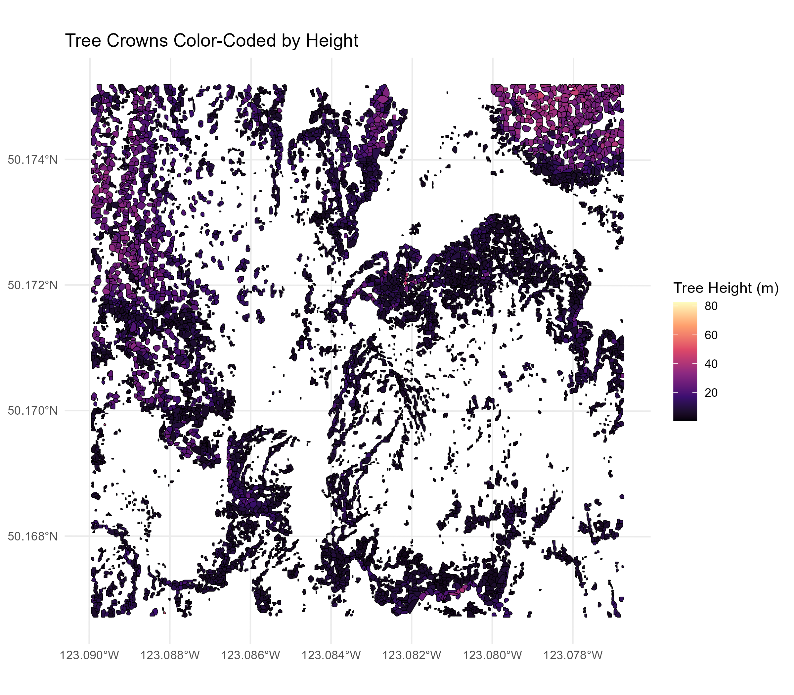
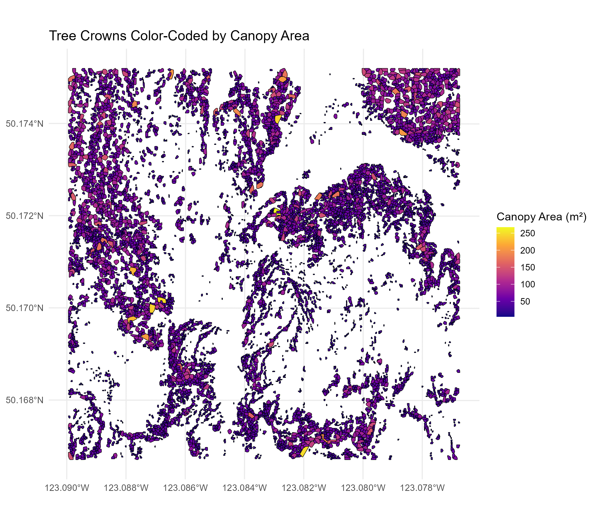
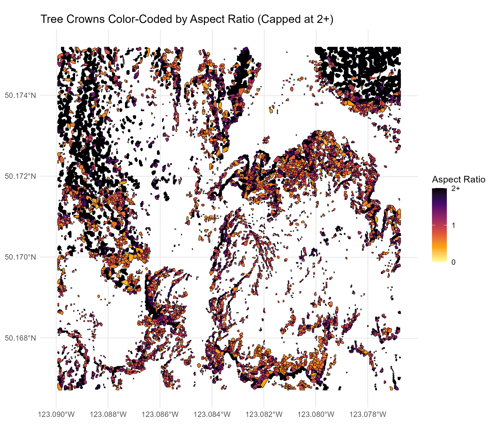
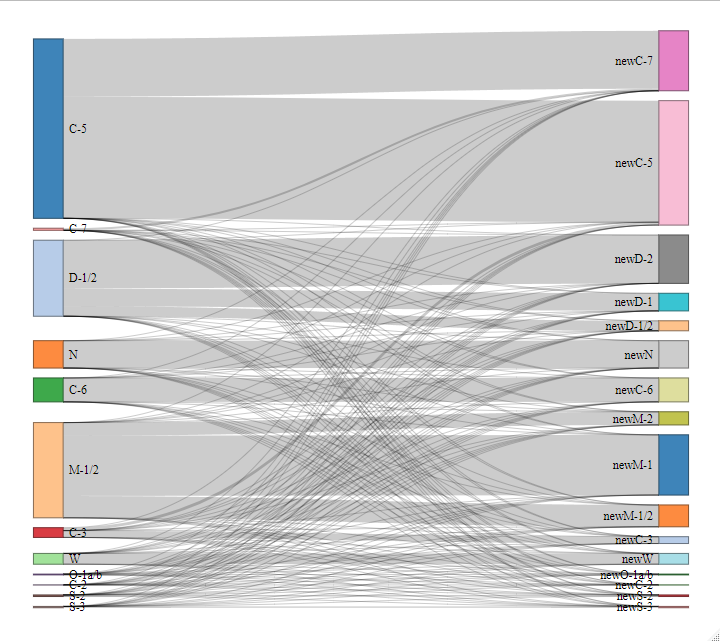

Wildfire Managment
This research integrates LiDAR-based metrics into wildfire fuel classification to improve accuracy and enhance wildfire management strategies. By refining fuel type classification, this project directly supports:
- More effective wildfire risk assessments for emergency response teams.
- Better land management policies to reduce fire hazards.
- Enhanced resource allocation for fire suppression efforts.
Why This Research Matters
Wildfires are increasing in frequency and intensity due to climate change, endangering communities, ecosystems, and infrastructure. Traditional wildfire risk mapping methods rely on expert interpretation and aerial photography, leading to significant classification errors. Our research integrates LiDAR technology to enhance wildfire fuel type classification, offering:
- More accurate fire behavior predictions through high-resolution fuel maps.
- Improved wildfire response and mitigation strategies.
- Better-informed forest management and policy decisions to reduce risk in high-priority areas.
By improving the precision of VRI fuel type classification, this research contributes directly to wildfire prevention, preparedness, and suppression efforts, ultimately protecting lives, property, and biodiversity.
Research Objectives
- Enhance VRI fuel type classification with LiDAR data.
- Identify spatial patterns in forest fuel distribution.
- Improve wildfire management through more accurate fuel type mapping.
- Validate the effectiveness of LiDAR augmentation using comparative analysis.
Study Area

Overview
The Resort Municipality of Whistler (RMOW) spans 245 km², featuring mountainous terrain, dense forests, and fire-prone ecosystems.
Fire History & Risk Factors
Historic Wildfires:
- 1916 Mountain Fire: Major fire in the Pemberton Valley.
- 1994 Emerald Lake Fire: Affected ecological and recreational areas.
- 2003 Whistler Mountain Fire: Threatened the ski resort but was contained.
Fire Risk Factors
- Climate Change: Rising temperatures & increased fire frequency.
- Drought Conditions: Exacerbates fuel dryness.
- Dense Forest Canopy: Supports rapid fire spread.
Infrastructure & Vulnerability
- Major Roads: The Sea-to-Sky Highway is crucial for emergency evacuation.
- Tourism Dependency: Economic impact of fire-related closures.
- Ecosystem Sensitivity: Old-growth forests & alpine meadows at risk.
Fire Management Strategies
- Fuel Breaks: Vegetation clearance to prevent fire spread.
- Prescribed Burns: Controlled burns to manage fuel loads.
- FireSmart Programs: Public education and community involvement.
Methodology & Results
Fuel Type Classification
We utilized the BCWS fuel typing algorithm, integrating LiDAR-derived metrics to improve traditional VRI classifications.
Key Steps in Methodology
- Data Acquisition & Preprocessing
- Processed point cloud LiDAR data using the
lidRpackage in R. - Removed noise, duplicates, and outliers.
- Converted the dataset to EPSG:26910 (NAD83 / UTM zone 10N).
- Processed point cloud LiDAR data using the
- Terrain Normalization & CHM Generation
- Created a 2m resolution Digital Terrain Model (DTM).
- Generated a Canopy Height Model (CHM).
- Filtered vegetation below 2m to remove understory noise.
- Tree Detection & Feature Extraction
- Used a local maximum filter (LMF, 5m window) for tree detection.
- Extracted the following tree metrics:
- Tree Height
- Canopy Area
- Aspect Ratio (height to width)
- Canopy Curvature (surface curvature measurement)
- Integrated LiDAR-derived tree attributes into an enhanced VRI dataset.
- Augmenting VRI Fuel Types
- Applied the Canadian Fire Behavior Prediction (FBP) System fuel classification.
- Mapped conifer percentage across RMOW.
- Created a geodatabase for wildfire risk assessment.
Challenges & Limitations
- Lack of ground-truth validation data.
- Potential misclassification in open-canopy conifer stands.
- Computational complexity of tree segmentation.
Visualizations


Aspect Ratio Visualization

A composite value of aspect ratio. Which represent the width of the trees’s in relation to its height. Ranging from 0 - 2. We know that popular deciduous trees within BC are Bigleaf Maple, and Black cottonwood and their aspect ratios frequently average between 1.29 - 2.39 while coniferous trees such as Douglas fir and Western Redceder range from 2.84 to 4.25 according to BC BigTree Statistics from UBC Faculty of Forestry (2025). Higer aspect ratio means that a tree is more narrow and is more likely to be a conifer. A composite value of aspect ratio. Which represent the width of the trees’s in relation to its height. Ranging from 0 - 2. We know that popular deciduous trees within BC are Bigleaf Maple, and Black cottonwood and their aspect ratios frequently average between 1.29 - 2.39 while coniferous trees such as Douglas fir and Western Redceder range from 2.84 to 4.25 according to BC BigTree Statistics from UBC Faculty of Forestry (2025). Higer aspect ratio means that a tree is more narrow and is more likely
to be a conifer.
Enhancing VRI Accuracy
Traditional VRI classification relies on expert interpretation and aerial photography. Our LiDAR-augmented method provides:
- Higher Resolution Mapping: More detailed tree and canopy detection.
- Improved Classification Accuracy: Enhanced fuel type differentiation.
- Revised VRI Maps: Correcting classification errors (e.g., misclassified C-5 fuel types).
Sankey Diagram
Illustrates potential shifts in classification due to LiDAR augmentation:
